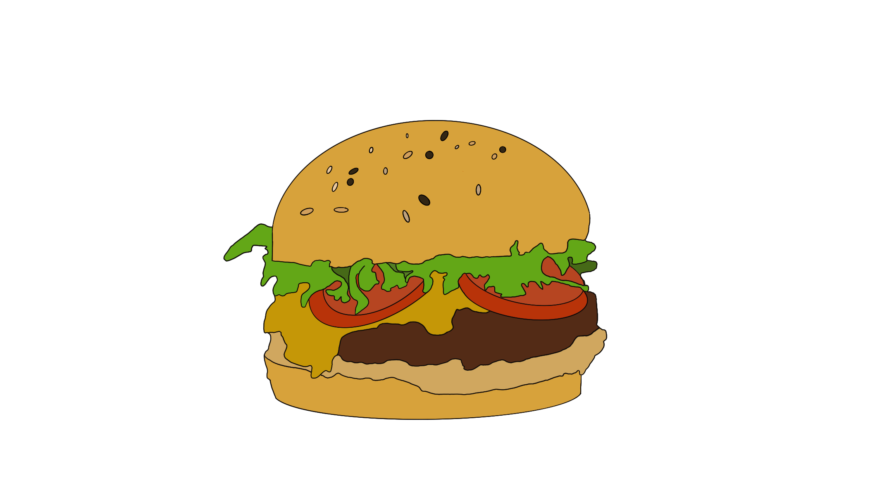

Every person on the planet contributes to the growing, worldwide carbon footprint. However, some people’s habits are more detrimental to the environment than others. Nevertheless, every person is able to make small lifestyle changes to aid us in lowering our carbon footprint as a planet. The places of possible improvement can be divided into a few categories, including: Transportation Trash Production Energy Use Food Consumption
Transportation
When fuel is burned, carbon dioxide and other harmful gasses are released. For every gallon of gas that is burned approximately 24 pounds of greenhouse gasses are emitted. Worldwide, 34.81 billion metric tons of carbon were emitted in 2020 alone.
There are many different ways to alter transportation habits for the sake of the environment. Choosing energy-efficient electric vehicles over fuel powered vehicles can significantly reduce daily pollution levels, and help save nonrenewable resources for other, more paramount situations. Choosing to carpool with friends and family and opting for public transportation instead of individually driving will also decrease the amount of vehicles on the road at a time. If the destination is in close enough proximity to allow it, choosing to ride a bicycle or walk promotes a healthier lifestyle and decreases the use of fossil fuels. Flying via airplane also takes up 3% of the world's carbon emissions. By decreasing the number of flights you take in a year, you could greatly reduce your personal carbon footprint.
Trash
The production of inorganic materials, that usually end up in landfills, uses natural resources (water, timber, fuel, etc.) which causes carbon emissions. When organic waste breaks down, it releases gas, such as methane and carbon dioxide into the air. The waste management process also releases an abundance of gasses from all the transportation and incineration used to get rid of all the trash.

In the early 1900s, recycling was created. Nevertheless, even now, less than a third of households in the United States practice recycling regularly. By recycling, the amount of waste is exponentially decreased, the need for harvesting new materials is greatly reduced, and pollution of carbon into the atmosphere is therefore also reduced. By shopping strategically, fewer products go to waste and end up in landfills. Try making a list of exactly what you need and buy only those things. In the 1980s, the idea of a zero-waste lifestyle began to be discussed, where participants would create no waste in their day-to-day life by buying whole foods, using reusable products, and letting nothing go without a purpose. By making small lifestyle changes, such as switching from common throw-away plastic bags to reusable containers, glass bottles, jars, or cloth bags, there would be a large decrease in the amount of slow-to-decompose plastic ending up in landfills worldwide.
Energy Use

Since 1973, the average American home has almost doubled their energy use per year. Heating a home requires fossil fuels to be burned. Fossil fuels burned from heating homes is one of the biggest greenhouse gas contributors in the United States.
People rely on energy and electricity to get through their day to day life. Whether it is heating and cooling, cooking, lighting, and more, electricity is used everywhere. In 2020 alone, 3.8 trillion kilowatts of energy were used in the United States. Swapping out traditional incandescent light bulbs for more energy efficient LED or CFL ones can be a great start to preserving the planet's resources and helping the environment. As well, upgrading appliances to more energy efficient alternatives is a great idea. On top of appliances, heating and cooling a home uses multiple power sources to keep running, and these sources require extensive greenhouse gas emission to keep working. By insulating your home, it can cut down on the amount of heating needed to keep the house warm and reduce carbon emissions.
Food Consumption
Food production accounts for 26% of global carbon emissions. In the United States alone agriculture is responsible for 10% of national greenhouse gas production. When food is wasted, all the resources that went into producing that food is also wasted. Food production is clearing land in order to create more room for their industry. The packaging that food comes in also contributes to waste emissions (See trash section). Cattle raised for meat and dairy accounts for 65% of emissions in agriculture and 14.5% of all global emissions.
The food a person consumes can majorly impact the size of their carbon footprint. If everyone made small changes to their diet, it could greatly reduce the amount of greenhouse gasses released into the atmosphere. A major culprit for the massive amounts of carbon released in the food production process is the use of synthetic fertilizers and pesticides on farms to maintain freshness. Organic farming offers a more natural and sustainable alternative to the chemically altered produce made otherwise. Furthermore, eating less meat can also have a gigantic impact on the environment, specifically red meats. For example, replacing one red meat with poultry reduces emissions by nearly half. As surprising as it may sound, eating one vegetarian meal a week can save the carbon emission equivalent of driving 22 miles.